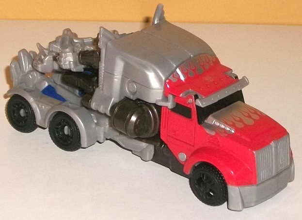
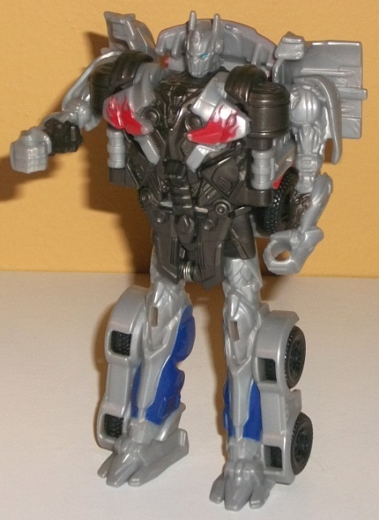

*It should be noted that this version of Silver Knight Optimus Prime is only sold in a Target-exclusive "One-Step Collection", which includes unchanged re-releases of AoE 1-step Lockdown , Dinobot Slug , Autobot Drift (car version), Grimlock , and Bumblebee (Concept Camaro version). See the linked reviews for my opinions on those toys.


Set Price
: $50 (U.S.)
Allegiance
: Autobot
Difficulty of Transformation
: Very
Easy
Color Scheme
: Light milky gray,
dark milky brownish gray, light red, and some black, dark blue, dark metallic
gunmetal gray, light sky blue, and silver
Rating
: 5.3
(NOTE: Because this is a repaint, this is not a full-blown review. This mainly covers any changes made to the mold and the color scheme, and merely compares it to the original AoE 1-Step Changer Optimus Prime toy. For a review on the mold itself, read the review of the original AoE 1-Step Changer Optimus Prime toy here .)
Optimus Prime's "Silver
Knight" edition is the solely "new" toy in Target's AoE One-Step Collection,
and it follows the pattern of Target's other AoE exclusives in being a
gray/silver version of his AoE design. For those of you who have been reading
my reviews for a while, you know that I'm not a fan of the rather bland,
light milky shade of gray that's used on a lot of TFs, and a pretty good
majority of this toy is made of it, which just looks boring and not nearly
as interesting and Optimus Prime's more traditional red-and-dark-blue deco.
That said, there are noticeable "exceptions" to this milky-gray rule in
both modes that help to break it up some and make the toy not look as boring
as it otherwise could have been. In vehicle mode, it's that the nose of
the truck and the front part of the hood-- the "trigger" piece-- both have
a good amount of silver paint on them, which looks great next to the light
red flame paint apps on those same parts, and serve for a nice bit of contrast
in what is otherwise a very monochrome alt mode. (The black wheels and
windows provide some additional contrast, but again-- monochrone.) In robot
mode most of Optimus' main body is made of a dark milky brownish gray plastic--
honestly at this dark it looks more brown than gray. It's not an exciting
color to be sure, but it does help to vary up things some and Optimus also
has a couple of dark gunmetal gray paint apps on his arms. There's also
some light red flame paint apps on his fake chest bits and some dark blue
paint along the sides of his lower legs for some much-needed color, and
his eyes are painted a light blue. That said, all of that mold detailing
on his chest is just begging for some more paint, as are his upper arms
and face.
No mold changes have
been made to this version of Optimus Prime.
The 1-step version of
Silver Knight Optimus Prime is the version I'd recommend least, and not
just because of the weakness of the mold (particularly in vehicle mode)--
it's that you have to buy five other 1-steps to get him, and he looks inferior
to the mass-retail version of the same mold. Given the discount price of
the pack (6 1-steps for $50-- you basically get one for free), if you're
in the market for AoE 1-steps and don't have any (or perhaps one) of these
molds, this could be a good purchase-- otherwise, this is an easy pass
for all but the biggest Prime completists.
Review by Beastbot